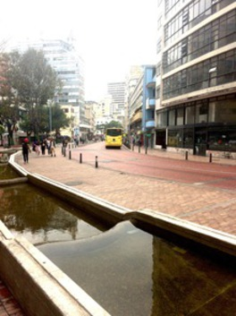
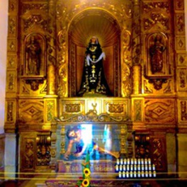

Bitácora: Bogotá y sus historias
Table of Contents
1 Introducción
Esta página constituirá la bitácora para el curso "Bogotá y sus Historias", cursado en la Fundación Universitaria Konrad Lorenz.
| Estudiante: Jonatan Adolfo Ahumada |
| Docente: Estefanía Vanegas |
2 Entradas
2.1
Visité el centro de la ciudad por ir a la librería Lerner. Me parece auspicioso que esta Libreria esté en esa zona, pues a pocas cuadras hay una estatua de José Rufino Cuervo y, además, está rodeada de universidades. Contrario a lo que uno está acostumbrado, la Libreria es buena. Con esto me refiero a que es bueno su catálogo, cosa que no cabría explicar aquí. Pero, por ejemplo, si se compara con un Barnes & Nobles, se notará la diferencia en su catálogo. Supongo que tendrá que ver con las segmentación del mercado editorial según las lenguas. Es decir, el busto de Cuervo efectivamente ha tenido su influencia sobre el quehacer de esos libreros. Lamentablemente, a esa hora estaba vacío. Además, los sábados cierran temprano. Para ellos no debe ser rentable una tarde de sábado. Había poca gente. Una profesora de unos 60 años con su amiga preguntaban por bibliografía sobre los judíos. Todo, lo que hubiere. Parece que preparaban una clase, pero se distrarían al mismo tiempo. Eran 'godas', así como lo pintan en las nóvelas de RCN. Recordé algunas clases en los Andes. Luego, también entró un gringo. Preguntó por 'books in English' y lo dirigieron a una sección al lado del salón de literatura colombiana. Es curioso estar rodeado de íconos nacionales y al mismo tiempo sentirse extrañado y expatriado.
Caminé el eje ambiental hasta llegar al Claustro del Rosario y luego tomé la séptima hasta el cruce con la 26.

Figure 1: Eje ambiental

Figure 2: A la salida de la Librería Lerner

Figure 3: En una de tantas iglesias del área
Figure 4: La séptima, tramo relativamente nuevo
Figure 5: Fin del recorrido, al pie del Observatorio
2.2
Hoy pude levantarme "tarde" porque contaba con el carro para ir a la Universidad, o eso creía. Resulta que mi trayecto fue bastante fácil y el parqueadero estaba vacío, pero por efecto de la somnolencia nunca me detuve a pensar por qué. Jamás se me ocurrió. Lamentablemente, era el Día Sin Carro, cosa de la que no me enteré jamás ni por noticias, ni por el banner del Transmilenio que había tomado varias veces el día de ayer.
La utilidad de este Día es similar a la de dejar de fumar un solo día al año, cuando fumas dos cajas diarias. Le dije esto a un estudiante de matemáticas con el que estudio y me respondió:
– 'Qué rabón'
Nunca me refutó convincementemente, más alla de decir que "Sí, sirve un poquito".
Entro a clase de estructuras de datos y me tomé el tiempo de revisar la ley. No muy sorprendentemente, fue escogida por votación popular, y fue propuesta por Antanas Mockus, el 'tipo de la cultura'. Ahora bien, ¿qué sucede si sacas el carro y te detiene un policia? (suponiendo que no te obligue a sobornarlo sacando una pistola, como ya me ha pasado). Primero te multan con 416,000 COP y, además (porque esto no es suficiente), se llevan el carro a los patios. Esto último es una verdadera joya, porque el costo por día de los patios es sospechosamente elevado, sobre todo si se le suma el hecho de que el trámite para sacarlo de los patios también es infernalmente demorado (pierdes horas laborales o de estudio inevitablemente).
Me pregunto cómo es posible que constitucionalmente se pueda poner el consenso popular sobre la libertad de transitar sobre calles que uno paga, con el vehículo que uno paga. Con qué responden los depositarios de la sagrada moral: con trancones espantosos de Transmilenio en el Día Sin Carro.
La 'ola verde' ataca nuevamente. Su voz es legión, y es ley.
2.3
Visité el Parque Sauzalito, al lado de la Teminal de Transporte. Este tipo de espacio es muy interesante por dos motivos.
- Conserva recursos naturales en medio del cemento de la ciudad.
- Es un espacio recreativo para diversos segmentos poblacionales.
Por lo general, voy al Parque a tomar fotos. No obstante, como era domingo, me llamó la atención la gente. Estaba bastante lleno. Hagamos un breve inventario.
2.3.1 ancianos
Montados en las "máquinas de ejercicio" que la gobernación ha venido poniendo en este tipo de espacios. Recuerdo que hace años eso no estaba ahí. Es un poco ridículo ver cómo los ancianos usas estas máquinas porque no es un tipo de ejercicio apropiado para ellos. No es ni cardiovascular, ni de fueza (porque las máquinas no están bien diseñadas). En mi concepto, estas máquinas ejemplifican la pésima idea de gobierno que rige la ciudad y que llega a su epítome en Peñalosa. Invertir en lo mínimo posible en dádivas "democráticas" que la gente toma por grandes lujos, cuando su utilidad o beneficio en realidad es nulo.
2.3.2 niños
El parque está lleno de cursos de natación, patinaje, artes marciales, tenis, basketbol, etc. No me es muy claro cómo funciona el asunto. Es decir, si las clases las ofrece el parque o hay empresas privadas que alquilan el parque o si lo usan gratis. Había varios quiscos, pero no pregunté nada, pues no hay nada más mediocre que la mirada ausente de quien supervisa los hijos de otras personas por dinero.
2.3.3 deportistas
En Bogotá hay una cultura de calistenia. Hoy había algunos tipos utilizando las barras del Sauzalito, pero no es mucho en comparación con el parque Simón Bolívar.
2.3.4 La chica del quisquito de 'libros al viento'
Me gusta esta idea, pero creo que nadie la usa. También noto ahí un problema y es que, si eres lector, no vas a recurrir a un quisco arbitrariamente colocada para hacer tu lectura. Por otro lado, los libros que ponían no eran malos (salvo los del Centro de Memoria Histórica). Voy a poner fotos abajo. La chica que atendía procuraba tener buena actitud, pero también le aburría, porque había muy poca interacción. Es probable que tuviera una carrera universitaria, porque he visto que esas cosas pasen.
2.3.5 vendedores
La mayoría de vendedores ambulantes se postran en el suelo a disfrutar el ambiente. Dan una aura de pasividad.